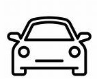

Centres d'intérêt
- Voyages (Europe, Afrique du Nord)
- Lecture
Téléphone : 06 65 72 18 72
Email : canellrault@gmail.com
LinkedIn : Canelle Rault
Adresse : 16 rue de Tourville, 56100 Lorient
J'ai le sens des responsabilités, je suis organisée et sais faire preuve de rigueur et d'autonomie.
Date de naissance : 04/11/2004 (20 ans)
 Permis : B - Véhicule personnel
CV : CV Canelle RAULT